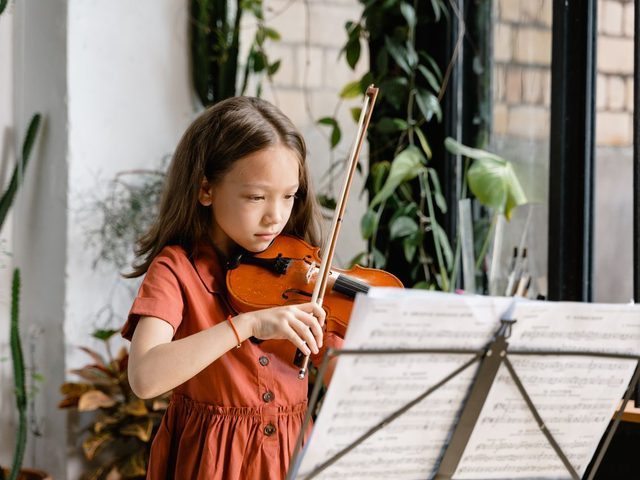
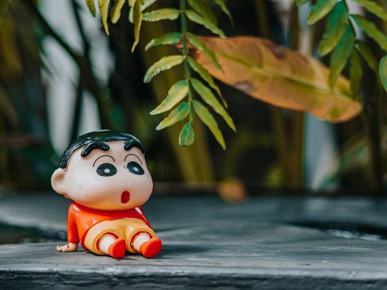
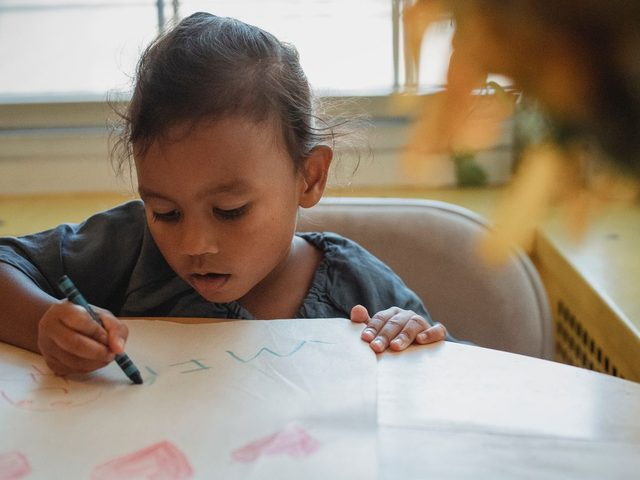
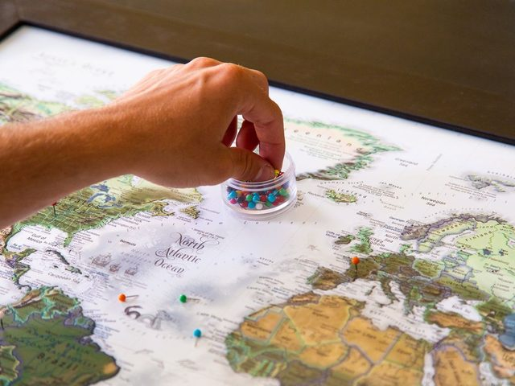
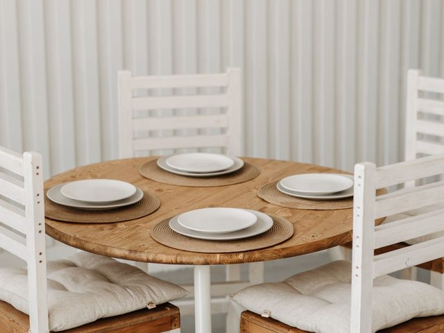
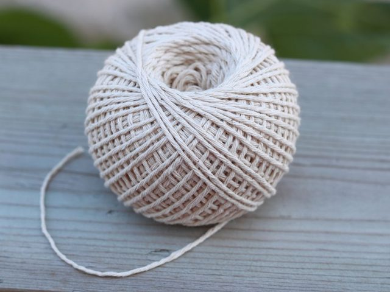
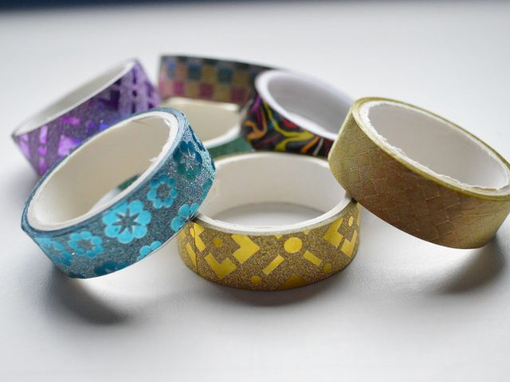

VOCABULARY · LALA WORD UNIT 15
The Power of Music．一字多義（十五）
cover 是蓋子，也是「翻唱」；ring 是戒指，也是「（電話）響」。這個單元有 4 個主題單字、21 個更多單字，再整理 probably／possible／perhaps、except／besides／beside，和字首 im-、字尾 -less。
共 30 個單字．點 🔊 聽發音

1playv. / n.
演奏（樂器）；播放；玩；從事運動；戲劇；劇本；比賽（態度）
play - played - played - playing
- 1v.演奏（樂器） play + the + 樂器My sister plays the violin.我姊姊拉小提琴。
- 2v.播放Can you play that song again?你可以再播一次那首歌嗎？
- 3v.玩；從事運動 play + 球類Let's play basketball after school.放學後我們去打籃球吧。
- 4n.戲劇；劇本Our class put on a play.我們班演了一齣戲。
- 5n.比賽（態度）Fair play is more important than winning.公平比賽比贏更重要。

2coverv. / n.
覆蓋；蓋子；封面；包含；涵蓋；翻唱；掩護；遮蔽
cover - covered - covered - covering
- 1v.覆蓋 be covered with 被…覆蓋The mountain is covered with snow.山上覆蓋著雪。
- 2n.蓋子；封面 Don't judge a book by its cover. 人不可貌相I like the cover of this book.我喜歡這本書的封面。
- 3v.包含；涵蓋The test will cover Units 1 to 4.這次考試範圍是第一到第四課。
- 4v.翻唱The band covered an old song.樂團翻唱了一首老歌。
- 5n.掩護；遮蔽 take cover 躲避We took cover under a tree when it rained.下雨時我們在樹下躲雨。

3risev. / n.
增加；上漲；上升；增加；起身；站起來；（太陽、月亮）升起
rise - rose - risen - rising
- 1v.增加；上漲Prices keep rising.物價一直上漲。
- 2n.上升；增加There is a rise in the number of tourists.觀光客人數增加了。
- 3v.起身；站起來Please rise for the national anthem.請起立唱國歌。
- 4v.（太陽、月亮）升起The sun rises in the east.太陽從東方升起。

4publicadj. / n.
公開的；公共的；大眾；民眾
- 1adj.公開的 in public 公開地；當眾Don't shout in public.不要在公共場所大叫。
- 2adj.公共的There is a public library near my house.我家附近有一間公立圖書館。
- 3n.大眾；民眾 the public 大眾The museum is open to the public.這間博物館開放給大眾參觀。

5appearv.
出現；登場；看起來；似乎
appear - appeared - appeared - appearing
- 1v.出現A rainbow appeared after the rain.雨後出現了一道彩虹。
- 2v.登場The singer will appear on stage at eight.歌手八點登台。
- 3v.看起來；似乎 appear to 似乎He appears to be tired.他看起來很累。
6bottomadj. / n.
底部的；底部；末端；最後一名；屁股
複數 bottoms
- 1adj.底部的The socks are in the bottom drawer.襪子在最下面的抽屜裡。
- 2n.底部 from the bottom of one's heart 打從心底There is some sugar at the bottom of the cup.杯底有一些糖。
- 3n.末端；最後一名Our team is at the bottom of the list.我們隊排在最後。
- 4n.屁股The baby fell on his bottom.寶寶一屁股跌坐在地上。
7bowv. / n.
鞠躬；鞠躬；使彎曲；弓；蝴蝶結
bow - bowed - bowed - bowing
- 1v.鞠躬 （鞠躬唸 [baʊ]）The students bowed to the teacher.學生們向老師鞠躬。
- 2n.鞠躬 take a bow 鞠躬致意The actors took a bow at the end.演員們最後鞠躬謝幕。
- 3v.使彎曲The trees bowed in the strong wind.樹在強風中彎下腰。
- 4n.弓 （弓、蝴蝶結唸 [bo]）He shot an arrow with his bow.他用弓射了一支箭。
- 5n.蝴蝶結She wears a red bow in her hair.她頭上綁著紅色蝴蝶結。

8charactern.
角色；性格；字
複數 characters
- 1n.角色Who is your favorite cartoon character?你最喜歡的卡通人物是誰？
- 2n.性格He has a kind character.他的個性很善良。
- 3n.字How many Chinese characters can you write?你會寫幾個中文字？

9drawv. / n.
畫；拉；抽（籤）；吸引；平手
draw - drew - drawn - drawing
- 1v.畫Can you draw a cat?你會畫貓嗎？
- 2v.拉；抽（籤） draw lots 抽籤Draw the curtains, please.請拉上窗簾。
- 3v.吸引 draw attention 吸引注意The show drew a big crowd.這場表演吸引了一大群人。
- 4n.平手The game ended in a draw.比賽以平手結束。
10fooln. / v.
傻瓜；愚弄；欺騙；胡鬧（fool around）
fool - fooled - fooled - fooling
- 1n.傻瓜I felt like a fool.我覺得自己像個傻瓜。
- 2v.愚弄；欺騙You can't fool me!你騙不了我的！
- 3v.胡鬧（fool around） fool around 鬼混；胡鬧Stop fooling around and do your homework.別再胡鬧了，快去寫功課。

11fryv. / n.
煎；炸；炒；曬傷；薯條（fries）
fry - fried - fried - frying；複數 fries
- 1v.煎；炸；炒 fried rice 炒飯；fried chicken 炸雞Dad fried some eggs for breakfast.爸爸煎了幾顆蛋當早餐。
- 2v.曬傷I got fried at the beach.我在海邊曬傷了。
- 3n.薯條（fries）I'd like a burger and fries.我要一個漢堡和薯條。

12heatv. / n.
加熱；熱；高溫；火力
heat - heated - heated - heating
- 1v.加熱 heat up 加熱Heat the milk before you drink it.牛奶熱一下再喝。
- 2n.熱；高溫I can't stand the summer heat.我受不了夏天的炎熱。
- 3n.火力Cook the soup on low heat.用小火煮湯。

13jokev. / n.
開玩笑；笑話；荒唐可笑的事物
joke - joked - joked - joking
- 1v.開玩笑Don't worry. I'm only joking.別擔心，我只是開玩笑的。
- 2n.笑話 tell a joke 說笑話Grandpa told us a funny joke.爺爺講了一個好笑的笑話。
- 3n.荒唐可笑的事物The test was so easy. It was a joke!考試簡單得像開玩笑一樣！

14linen. / v.
線條；車道；隊伍；臺詞（lines）；排隊（line up）
line - lined - lined - lining
- 1n.線條Draw a straight line.畫一條直線。
- 2n.車道Drivers should stay between the lines.駕駛應該待在自己的車道裡。
- 3n.隊伍There is a long line at the ice cream shop.冰淇淋店前大排長龍。
- 4n.臺詞（lines）I need to learn my lines for the play.我要背戲劇的臺詞。
- 5v.排隊（line up） line up 排隊Please line up at the door.請在門口排隊。

15markv. / n.
標記；紀念；記號；痕跡；分數
mark - marked - marked - marking
- 1v.標記Mark the right answers with a pen.用筆標出正確答案。
- 2v.紀念We had a party to mark Grandma's 80th birthday.我們開派對慶祝奶奶八十歲生日。
- 3n.記號；痕跡There are dirty marks on the wall.牆上有髒髒的痕跡。
- 4n.分數 full marks 滿分She got full marks in English.她英文考滿分。

16noticev. / n.
注意到；通知；告示
notice - noticed - noticed - noticing
- 1v.注意到Did you notice his new haircut?你有注意到他的新髮型嗎？
- 2n.通知；告示Read the notice on the board.看一下公布欄上的通知。

17papern. / v.
紙；報紙；報告；貼壁紙
paper - papered - papered - papering
- 1n.紙 a piece of paper 一張紙Can I have a piece of paper?可以給我一張紙嗎？
- 2n.報紙；報告Dad reads the paper every morning.爸爸每天早上看報紙。
- 3v.貼壁紙We papered the bedroom walls.我們在臥室牆上貼了壁紙。

18pinv. / n.
釘住；別住；弄清楚（pin down）；別針；圖釘
pin - pinned - pinned - pinning
- 1v.釘住；別住Pin the poster on the board.把海報釘在布告欄上。
- 2v.弄清楚（pin down） pin down 弄清楚We can't pin down the problem.我們找不出問題在哪裡。
- 3n.別針；圖釘She wears a flower pin on her coat.她外套上別著一個花朵別針。
19ringv. / n.
（電話、鈴）響；打電話；戒指；圓圈；環
ring - rang - rung - ringing
- 1v.（電話、鈴）響The phone is ringing.電話在響。
- 2v.打電話I'll ring you tonight.我今晚打電話給你。
- 3n.戒指She wears a gold ring.她戴著一枚金戒指。
- 4n.圓圈；環The kids danced in a ring.孩子們圍成一圈跳舞。

20roundv. / prep. / n. / adj.
繞行；繞著；圍著；回合；圓的
round - rounded - rounded - rounding
- 1v.繞行The bus rounded the corner.公車轉過街角。
- 2prep.繞著；圍著 同 aroundWe sat round the table.我們圍著桌子坐。
- 3n.回合She won the first round.她贏了第一回合。
- 4adj.圓的The earth is round.地球是圓的。
21sliden. / v.
溜滑梯；滑動；滑落；悄悄地移動
slide - slid - slid - sliding
- 1n.溜滑梯The kids are playing on the slide.孩子們在玩溜滑梯。
- 2v.滑動；滑落The book slid off the desk.書從桌上滑下來。
- 3v.悄悄地移動The cat slid into the room.貓悄悄溜進房間。
22smoken. / v.
煙；冒煙；抽菸
smoke - smoked - smoked - smoking
- 1n.煙 There's no smoke without fire. 無風不起浪Smoke is coming out of the kitchen!廚房冒出煙來了！
- 2v.冒煙The old car is smoking.那台老車在冒煙。
- 3v.抽菸Smoking is bad for your health.抽菸對健康有害。
23squaren. / adj. / v.
正方形；廣場；平方的；使成正方形；與…一致
square - squared - squared - squaring
- 1n.正方形Cut the paper into squares.把紙剪成正方形。
- 2n.廣場There is a big tree in the square.廣場上有一棵大樹。
- 3adj.平方的The room is 20 square meters.這個房間二十平方公尺。
- 4v.使成正方形Square the corners of the box.把盒子的角弄方正。
- 5v.與…一致 square with 與…一致His story doesn't square with the facts.他的說法和事實不符。

24stringn. / v.
細繩；一串；一連串；（樂器的）弦；串起
string - strung - strung - stringing
- 1n.細繩 a piece of string 一段繩子Tie the box with some string.用細繩把盒子綁起來。
- 2n.一串She bought a string of beads.她買了一串珠子。
- 3n.一連串He asked a string of questions.他問了一連串的問題。
- 4n.（樂器的）弦A guitar has six strings.吉他有六根弦。
- 5v.串起We strung lights across the yard.我們在院子裡掛起一串燈。

25tapev. / n.
用膠帶黏；膠帶；錄音帶；錄影帶
tape - taped - taped - taping
- 1v.用膠帶黏Tape the note to the door.用膠帶把紙條貼在門上。
- 2n.膠帶I need some tape to fix this.我需要膠帶來修這個。
- 3n.錄音帶；錄影帶 on tape 被錄下來The thief was caught on tape.小偷被錄影機拍到了。
26impossibleadj.
不可能的
im- + possible
- 1adj.不可能的Nothing is impossible.沒有不可能的事。
27impoliteadj.
不禮貌的
im- + polite
- 1adj.不禮貌的It's impolite to talk with your mouth full.嘴裡有食物還說話是不禮貌的。
28carelessadj.
粗心的
care + -less
- 1adj.粗心的I made a careless mistake on the test.我考試時犯了一個粗心的錯誤。
29uselessadj.
沒用的
use + -less
- 1adj.沒用的This old phone is useless now.這支舊手機現在沒用了。
30worthlessadj.
沒有價值的
worth + -less
- 1adj.沒有價值的The fake coin is worthless.這枚假硬幣一文不值。
FOCUS
易混淆字：probably／possible／perhaps
| 單字 | 用法 | 例句 |
|---|---|---|
| probably | （副詞）很可能；大概，把握比較大 | He will probably be late. |
| possible | （形容詞）可能的：It's possible (that)…／It's possible for + 人 + to V | It's possible that it will snow. |
| perhaps | （副詞）或許，把握比較小，語氣委婉 | Perhaps she forgot. |
FOCUS
易混淆字：except／besides／beside
| 單字 | 意思 | 例句 |
|---|---|---|
| except | 除了…之外（不包括） | Everyone came except Tom.（Tom 沒來） |
| besides | 除了…之外還有（包括在內） | Besides English, she speaks Japanese. |
| beside | 在…旁邊（只差一個 s，意思完全不同） | The cat is sitting beside me. |
FOCUS
字首 im-、字尾 -less
| 原來的字 | 加字首／字尾 | 意思 |
|---|---|---|
| possible 可能的 | impossible | 不可能的 |
| polite 有禮貌的 | impolite | 不禮貌的 |
| care 小心 | careless | 粗心的 |
| use 使用 | useless | 沒用的 |
| worth 價值 | worthless | 沒有價值的 |
im-＝不；-less＝沒有（without）。
FOCUS
一字多義：最常見 vs. 容易忽略的意思
| 單字 | 最常見的意思 | 容易忽略的意思 |
|---|---|---|
| cover | 蓋子；覆蓋 | 翻唱；涵蓋（考試範圍） |
| bow | 鞠躬（[baʊ]） | 弓；蝴蝶結（[bo]） |
| character | 角色 | 性格；字 |
| draw | 畫 | 平手；吸引 |
| line | 線 | 隊伍；臺詞 |
| ring | 戒指 | （電話）響 |
| square | 正方形 | 廣場 |
| string | 細繩 | 樂器的弦；一連串 |